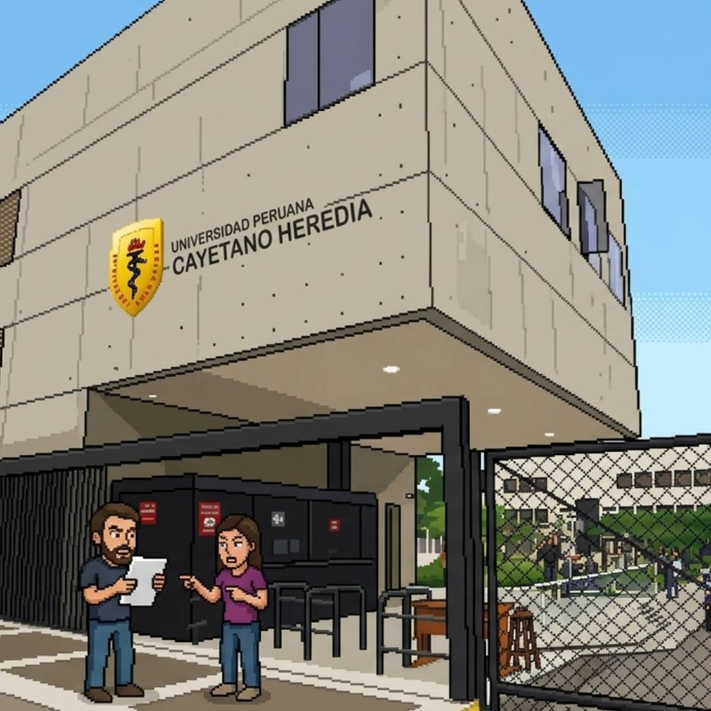

REGISTRO_DE_ENTREVISTAS
> PUBLICO: Estudiantes UPCH (18-25 años).
> PERFIL: Usuarios de redes sociales dinámicas.
> HALLAZGO: Interés bajo en política tradicional.
> OBJETIVO: Identificar fricciones en noticias.
> HCD: Validar prototipos de consumo rápido.
